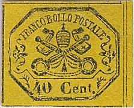
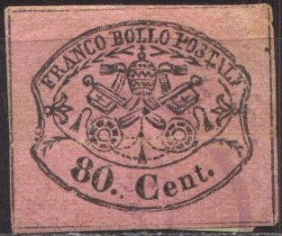
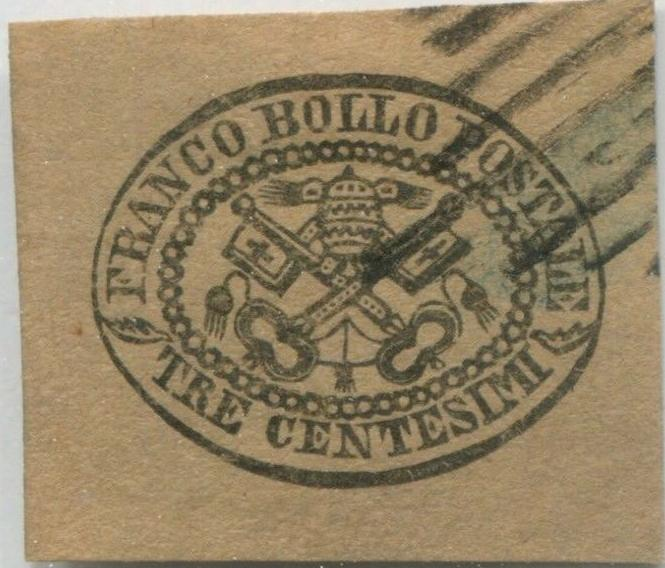
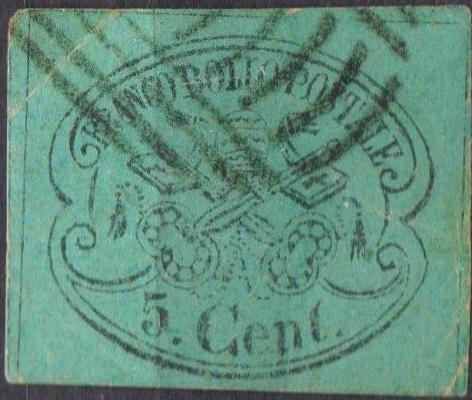
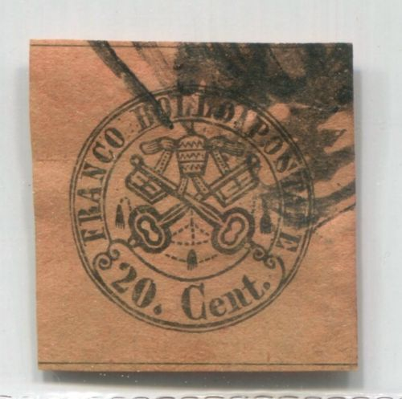
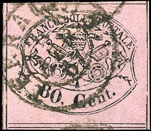
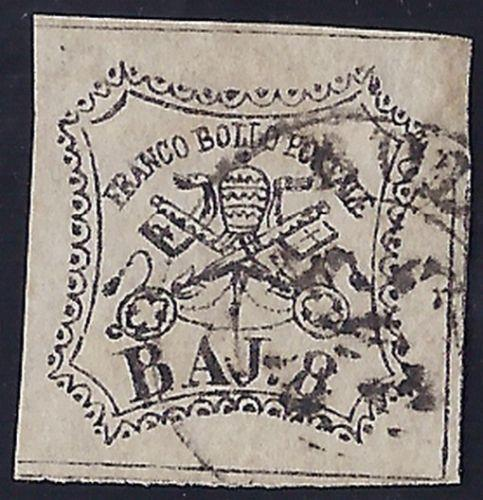

Return To Catalogue - 1867 issue, reprints - 1851 issue, 50 b and 1 Sc values - 1851 issue - Italy
Note: on my website many of the
pictures can not be seen! They are of course present in the
catalogue;
contact me if you want to purchase the catalogue.
Click here for Papal States 1851 issue or here for 1851 issue, 50 b and 1 Sc values




2 c black on green 3 c (TRE) black on grey 5 c black on blue 10 c black on red 20 c black on lilac 40 c black on yellow 80 c black on rose
Block of four:
Note that the "T" of "CENTESIMI" always seems to be lower than the "N" of the same word in the "TRE CENTESIMI". These stamps became invalid in 1870.
Value of the stamps |
|||
vc = very common c = common * = not so common ** = uncommon |
*** = very uncommon R = rare RR = very rare RRR = extremely rare |
||
| Value | Unused | Used | Remarks |
| Imperforate | |||
| 2 c | *** | R | |
| 3 c | RR | RRR | |
| 5 c | *** | R | |
| 10 c | * | ** | |
| 20 c | * | ** | |
| 40 c | R | RR | |
| 80 c | R | RR | |
| Perforated 13 (13 1/4); usually rough | |||
| 2 c | ** | *** | |
| 3 c | R | RRR | |
| 5 c | *** | *** | |
| 10 c | * | * | |
| 20 c | * | *** | |
| 40 c | *** | R | |
| 80 c | *** | RR | |
| Reprints | |||
| All values | vc | - | |
Grill cancel together with a 'ACUTO' straight townname cancel and
'ANAGNI' circular date cancel on piece of envelope, reduced size
Lozenge of dots cancel (most usual cancel on this issue),
elsewhere on the envelope a circular date cancel was placed,
reduced size

Lozenge of dots cancel
The most usual cancel is the 'Lozenge of Dots' cancel which was introduced in 1868. All previous cancelling devices were to be replaced by this one as instructed by the postal authorities.
Unfinished remainders
Some remainders exist of the 5 c, 10 c, 20 c and 80 c. More information can be found on: http://www.vaticanphilately.org/rs.htm.The 5, 10 and 20 c were not gummed and are imperforate with slightly different colours.
ATTENTION: most of the centesimi stamps of the Papal States have been reprinted in large quantities. They are very hard to distinguish from original stamps. PClick here for more information of the very common 1867 issue reprints. These reprints are almost worthless and can still be found in large quantities today. Many of the stamps shown above are probably reprints.
This 2 c forgery also appears in the de Torres
catalogue of 1879 on page 86. It is identical to a forgery
listed in the book Roman States Forgeries, the issue of
1867-1868' by F.J.Levitsky and F.A.Jenkins. Sorry, no image
available yet of the 'real' forgery.
Spiro forgery of the 3 c, the "F" and "R" of
"FRANCO" are different, the "B" of
"BOLLO" too large, etc.

According to Roman States Forgeries, the issue of 1867-1868 by
F.J.Levitsky and F.A.Jenkins; this forgery was made by Senf. The
letters are all too large. It looks identical to an illustration
from a 1898 German stamp album from Schaubek. It appears next to
a 5 c and a 10 c illustration there. This is probably the reason
Levitsky mentions that Jenkins has seen this forgery se-tenant
with the 5 c and 10 c.

A Spiro forgery of the 5 c value. The "F" of
"FRANCO" is a "P" (here badly visible). The
"C" of "Cent" has a large lower serif. The
cancel is a typical Spiro cancel.

This is a Zechmeyer forgery of the 5 c value according to Roman
States Forgeries, the issue of 1867-1868 by F.J.Levitsky and
F.A.Jenkins.

Spiro forgery of the 10 c value, the '0' of '10' is more rounded
than in the genuine stamps and there is an "I" instead
of a "E" in "POSTALI"
Forgery of the 20 c, reduced size. In this forgery the '20' and
'Cent' are too close together
Forgery of the 20 c with a curved foot of the "2". The
keyhandles are also different. The "C" of
"Cent" is too big etc.


These forgeries of the 5 c, 10 c and 20 c were clearly based on
this 1898 German stamp album from Schaubek (issued by Senf).

Forgery made by Senf in 1875 according
to Roman States Forgeries, the issue of 1867-1868 by F.J.Levitsky
and F.A.Jenkins. It has a strange "40. Cent". I have
indeed seen this image in a Schaubek album (issued by Senf). This
forgery can also be found in the catalogue of Placido Ramon de Torres "Album
Illustrado para Sellos de Correo" of 1879 (information
passed to me thanks to Gerhard Lang, 2016) on page 86 (see second
image).

Forgery, very similar to the above Senf one, but for example a
narrower "0" in "40" and the "C" of
"Cent" taller.

10 c red on blue; fancy reprint?

A Senf forgery of the 80 c. The "8" looks like an
"S" and the "0" is narrow. There are only 5
inner black spaces in the key handles (genuine stamps have 7).
Many more forgeries exist.
More dangerous than the forgeries are the reprints (the forger Fournier probably also offered these reprints).
Fournier offers forgeries of these stamps in his 1914 pricelist (perforated 13), I presume he offered one of these reprints. When Fournier's forgeries were acquired by the Philatelic Union of Geneva, they received the overprint 'FAUX' and were mounted in a 'Fournier Album' that was sold to stamp dealers, so they could recognize the forgeries he had made.

(Fournier forgery? overprinted 'FAUX')
Page of a 'Fournier Album of Philatelic Forgeries' with forgeries
with 'FAUX' overprint, also some forged cancels
Page from a 'Fournier Album of Philatelic Forgeries' showing a
block of ten 50 B forgeries and a block of four forgeries of the
1 Sc value together with some other forgeries of the Papal
States.

This 80 c stamp appears to have a "TERRACINA 4 APR 67"
as also appears in the Fournier Album (but under Parma).
Page from 'A Fournier Album' with an example of the forged cancel
"TERRACINA 4 APR 67"

40 c with forged "CIVITAVECCHIA 10 NOV 67"

The forged forged "CIVITAVECCHIA 10 NOV 67" cancel in a
Fournier Album.

A postal forgery of the 8 Baj value with thicker "B"
and "A". Also the bottom of the tiara has the curved
lines in the wrong direction.
A description of how to detect the forgeries and
reprints can be found in the books:
1) 'Roman States forgeries - the issue of 1852' by Frederik J.
Levitsky;
2) 'Roman States forgeries - the issue of 1867-68' by Frederik J.
Levitsky and Rev. Floyd A. Jenkins;
3) 'Roman States essays and reprints - the issue of 1867-70' by
Rev. Floyd A. Jenkins.
These books are published by Triad Publications 30 Drabbington
way, Weston, Ma 02193 USA (with thanks to Lorenzo who passed this
information to me). These books are quite helpful to distinguish
forgeries (though some pictures of the forgeries are unclear). I
haven't read the third book.
From 1929 on Vatican City issued stamps.
Arms (with underprint with inscription 'POSTE VATICANE')
5 c black on lilac 10 c green on green 20 c violet on lilac 25 c blue on blue 30 c blue on yellow 50 c black on lilac 75 c red on grey Surcharged (1931) 25 c on 30 c blue on yellow Pope Pius XI 80 c red 1.25 L blue 2 L brown 2.50 L red 5 L green 10 L olive Express stamps with Pope Pius XI (larger size) 2 L red 2.50 L blue
All the above stamps (except the surcharged stamp of 1931) exist with overprint 'PER PACCHI' (parcel stamps) and were issued in 1931.
10 c with 'SEGNATASSE' overprint
The values 5 c, 10 c and 20 c exist with overprint 'SEGNATASSE' (postage due stamps, 1931). Some values were surcharged and overprinted with 'SEGNATASSE': 40 c on 30 c, 60 c on 2 L brown, 1.10 L on 2.50 L red.
0.25 L + 10 c green 0.75 L + 15 c red 0.80 L + 20 c brown 1.25 L + 25 c blue
{kind=link}
{kind=link}
{kind=link}
{kind=link}
{kind=link}